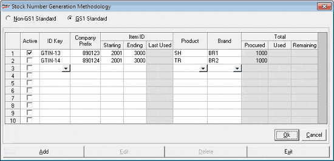

The Stock Number Generation Methodology window is as shown.

Active: Select to keep the pattern, of stock number generation methodology being defined, active for use when stock items are added. Inactive patterns are not used while adding new items.
ID Key: Select the required ID Key for the current pattern, from the list. This key defines the type, structure and length of the stock number. Currently GTINs (Global Trade Item Number) are predefined in Shoper 9. Click here to learn more about ID Keys.
Company Prefix: Enter the company prefix allotted by GS1. Company Prefixes have varying lengths.
Item ID: Identifies the item reference numbers allotted by GS1. The Item ID varies in length based on the ID Key chosen and the Company Prefix length. The allotted series may be sub divided as per your requirements and separate patterns can be designed for each of these subdivisions.
Starting: Enter the first number to be used for the current pattern. The maximum Item ID length can be length of Stock No. based on the chosen ID Key – length of the Company Prefix – 1 (length of check digit). If necessary, you can enter less number of digits than the maximum length allowed.
Ending: Enter the last number to be used for the current pattern. The maximum Item ID length can be length of Stock No. based on the chosen ID Key – length of the Company Prefix – 1 (length of check digit). If necessary, you can enter less number of digits than the maximum length allowed.
Last Used: Indicates the last Item ID used for item numbering using the pattern. While adding a new pattern this field is blank.
Product (Class 1): Select the Class 1 value for which the selected number series has to be used.
Brand (Class 2): Select the Class 2 value for which the selected number series has to be used. All Class 2 values corresponding to the selected Class 1 are displayed in the list.
Total: Displays the statistics of usage of the numbers allotted by GS1.
Procured: Count of numbers purchased from GS1.
Used: Count of numbers already used for items.
Remaining: Count of numbers available that can be assigned to items.